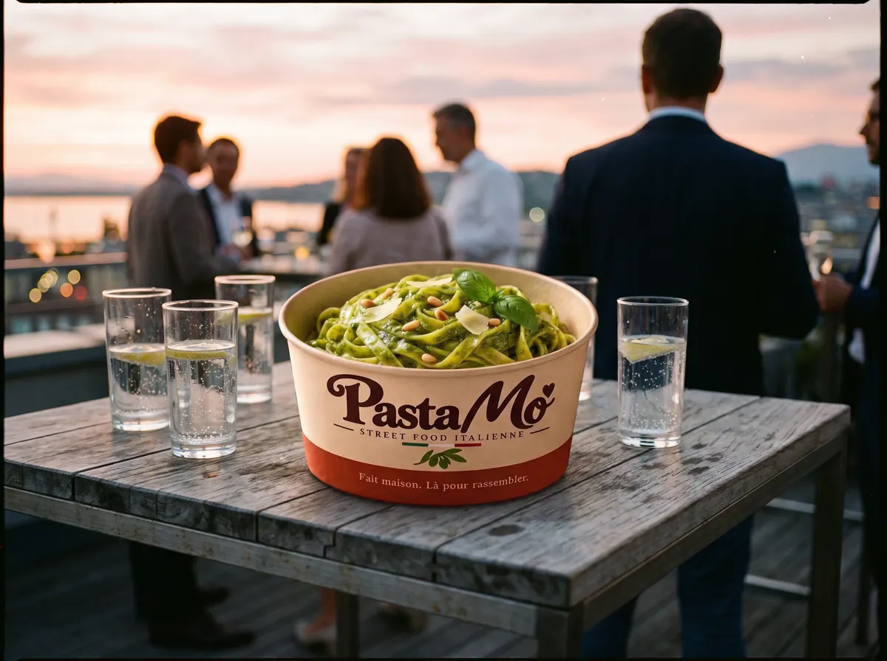

Entreprises · Afterworks · Séminaires
Le repas d'équipe dont on parle encore lundi.
Un stand de pâtes fraîches qui cuisine devant vos équipes et vos invités. Chacun choisit sa sauce, tout le monde se retrouve autour du stand.
Simple pour vous, sympa pour eux.
Vous avez déjà assez à organiser. On arrive avec notre stand, on cuisine, on sert, et vos équipes passent un bon moment.
Zéro prise de tête
Un seul interlocuteur, de la demande au jour J. Une proposition claire, un devis selon le nombre de convives.
Convivial par nature
On cuisine devant vous. La file devant le stand devient le meilleur moment pour discuter entre collègues.
Tout le monde mange
Carte courte, deux sauces végétariennes. Dites-nous les contraintes de vos équipes, on s'adapte.
Pour quelles occasions
Le bon prétexte pour se retrouver.
- Afterworks et apéros d'équipe
- Séminaires et journées d'équipe
- Portes ouvertes et inaugurations
- Journées clients et partenaires
- Fêtes de fin d'année
Comment ça se passe
- Vous nous écrivezType d'événement, date, lieu, nombre de personnes.
- On vous envoie une propositionFormule et devis selon le nombre de convives.
- On s'installeIntérieur ou extérieur : on fait le point sur l'emplacement, l'électricité et l'eau.
- On sert, on rangeVous profitez de l'événement avec vos équipes.
Ce qu'on sert
Trois sauces maison, une box.
Des pâtes fraîches d'un artisan genevois, et trois recettes de famille préparées par Morgane.


Questions fréquentes
Pouvez-vous vous installer dans nos locaux ?
Oui, à l'intérieur comme à l'extérieur. Avant l'événement, on fait le point avec vous sur l'emplacement, l'électricité et l'eau.
Comment est calculé le devis ?
Selon le nombre de convives et la formule choisie. Vous recevez une proposition claire avant de vous engager.
Avez-vous des options végétariennes ?
Oui : le Pesto Verde et la Pomodoro sont végétariens. Nos pâtes fraîches contiennent des œufs, nous ne proposons donc pas d'option vegan.
Venez-vous en dehors de Genève ?
Nous couvrons Genève et tout le canton. Pour le canton de Vaud et le reste de la Suisse romande, écrivez-nous.
Quand pouvez-vous intervenir ?
Nos premiers événements sont prévus dès début 2027. Nous préparons déjà le calendrier : écrivez-nous dès que votre date est connue.
Votre prochain afterwork a besoin de pâtes.
Dites-nous la date, le lieu et le nombre de personnes. On revient vers vous avec une proposition claire.
Ou par téléphone : 078 213 38 68